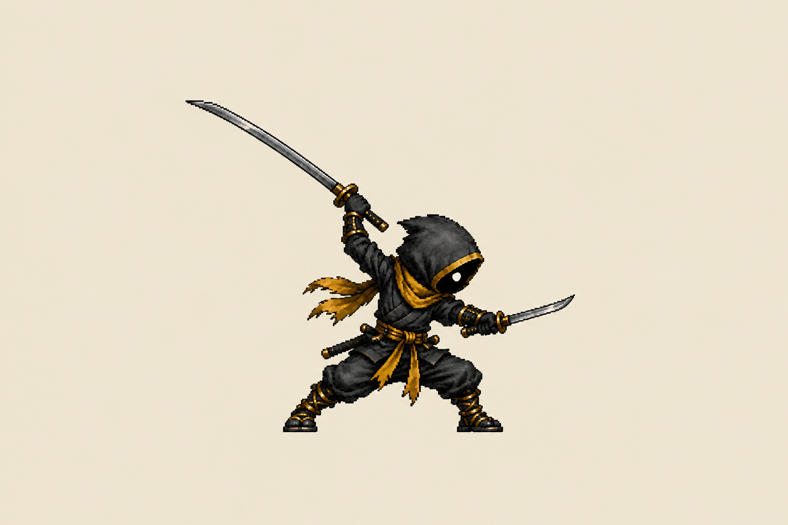
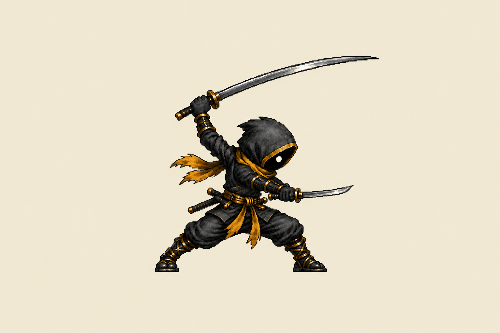
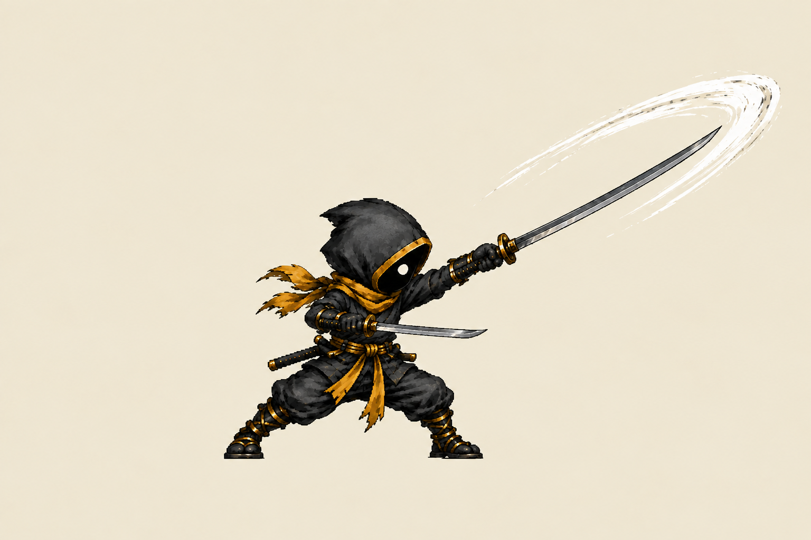
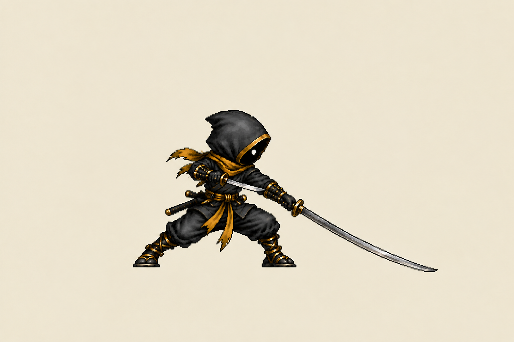
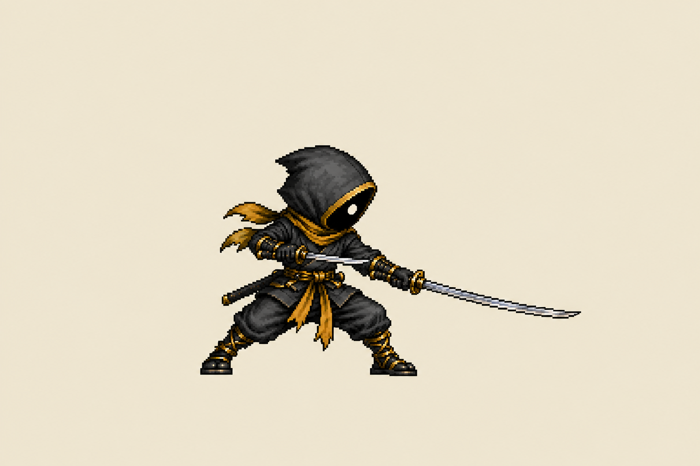

Kael · heavy attack model match
Five new review drawings use Kael’s existing compact hood, face, outfit and body proportions as their reference. The long katana leads the heavy cut; the short blade guards separately. The contact pose follows the previously approved action, redrawn to match his older game art. These are review images, not installed sprite cells.
Existing game frames · appearance reference

New matched frames · motion preview

1 / 5
1 · Anticipation
Individual poses
1 · Anticipation



2 · Acceleration

3 · Contact · matched redraw

4 · Follow-through

5 · RecoveryThe exact previously approved contact is preserved in the prior review. This new contact is a proposed appearance match. At game size, inspect the hood-to-body ratio, hands, scabbards, foot position and blade reach. More in-between drawings and a registered transparent cell pass are needed before sprite sheet installation.